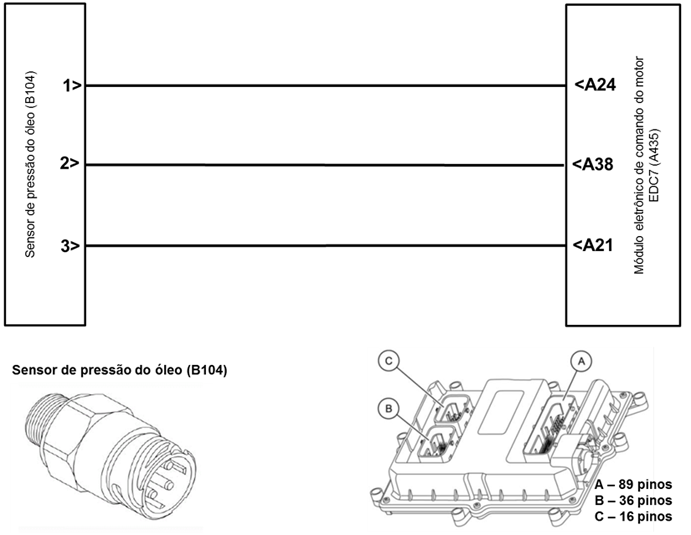
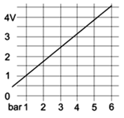

|

Descrição da Falha
Para o motor em diferentes regimes de funcionamento pressão de óleo constante, sinal implausível.
Indicação de Falha
Luz de alerta acende constantemente com os símbolos  e e  e ativa o alarme sonoro longo, com o veículo andando ou parado.
e ativa o alarme sonoro longo, com o veículo andando ou parado.
A LIM permanece desligada.
Estratégia de Monitoramento
Com o motor parado, é verificado se
a pressão do óleo medida está dentro do valor esperado pelo módulo EDC7.
Com o motor em funcionamento o
módulo verifica se para diferentes regimes de funcionamento há
diferentes valores de pressão de óleo, e se são proporcionais.
Efeito da Falha
O sensor mostra, com o veículo parado
a pressão do óleo >500mbar ou com o motor funcionando, a mesma
pressão do óleo em diferentes rotações.
Possíveis Falhas
FMI 1 : Motor parado e a pressão do óleo é maior que 0,5 bar, sinal muito alto.
FMI 3: Motor em diferentes regimes de funcionamento pressão de óleo constante, sinal implausível.
Aviso
  Não há
aviso específico para este código. Não há
aviso específico para este código.
Registros de Falhas em Outros
Módulos de Comando
Não.
Considerar os esquemas
elétricos do veículo
| Verificação
|
Medição |
Eliminação da
Falha |
|
Pressão do óleo com motor em funcionamento
|
Para este teste o líquido de arrefecimento deve estar acima de 70ºC.
Valor nominal:
1,5 - 5,4 bar
Em diferentes rotações, a pressão do óleo
deve apresentar diferentes valores
|
– Controlar o nível de
óleo
– Verificar o circuito do
óleo quanto a vazamentos após a bomba de óleo
- Verificar a correta instalação "pescador"
- Verificar o radiador de óleo quanto a obstrução, conforme manual de reparo
- Verificar o radiador de óleo quanto a obstrução
|
|
Pressão do óleo com o veículo parado
|
Valor nominal:
< 0,5 bar
|
– Verificar o sensor de
pressão do óleo e eventualmente substituir
|
| Sensor de pressão do óleo, tensão de alimentação |
Utilize o Tester Box e consulte o manual Verificação EDC7 C32:
- Medir a tensão entre o pino A24 (+) e o
pino A38 (–)
Valor nominal:
4,75 - 5,25 V
|
– Verificar o sinal com a MCO-08 quanto a plausibilidade
– Verificar cabos
(inclusive cabo do negativo na tampa de proteção do chicote dos bicos injetores, figura abaixo) quanto a rompimento ou oxidação
- Verificar quanto a obstrução no radiador do óleo, conforme manual de reparo
– Verificar as
conexões quanto a mau contato ou pino torto
– Substituir o sensor de
pressão do óleo
|
| Sensor de pressão do óleo, voltagem de sinal |
Utilize o Tester Box e consulte o manual Verificação EDC7 C32:
- Medir a tensão entre o pino A21 (+) e o
pino A38 (–)
Valor nominal:
1,96 - 4,81 V
 |
Tester Box

|